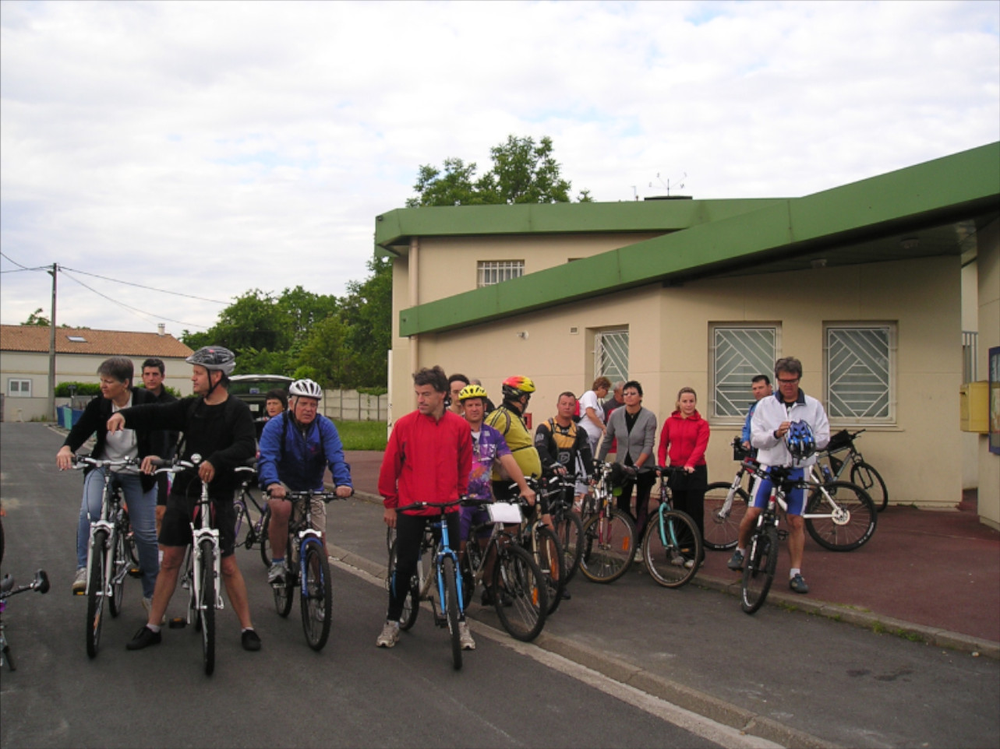
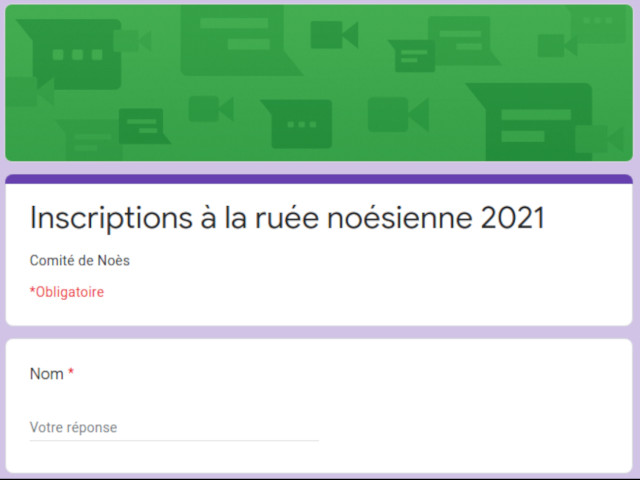
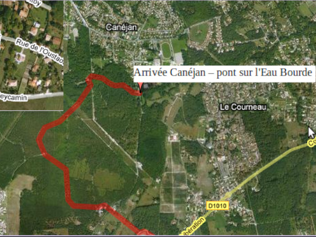

Une balade vélo en famille

Le parcours Pessac - Le Teich
8h Pessac - Moura (37km)
10h30 Rendez famille
11h Moura - Le Teich (21km)
13h Le Teich: Des huitres et du vin blanc

Inscription en ligne
Si vous souhaitez participer, inscrivez-vous.

Des parcours depuis 2007
Des idées de balades